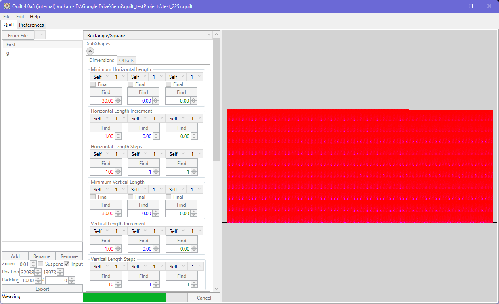

Using the 'Export' button, you can export the quilt to either GDSII or Oasis. The choice of file type to write is set in the resulting file dialog. Any existing file will be overwritten. The first stage of the export is 'Weaving', where the internal geometry is mapped into the gridded layout system. Colinear vertices are removed from edges during this process, such as that arising from clamping, ensuring clean geometry is written to disk. The progress of the export is shown in the GUI. Due to careful engineering, export of even large designs is extremely fast for both formats: typically less than 10 seconds for a 250,000 pattern quilt. If 'Suspend Build' is active, the quilt will be built during export.
|  |
In both cases, the quilt will be exported as a hierarchical design. Each pattern will be placed, using a cell reference, in the root cell. Cell placements are matched to the preview. Layer numbers are based on the position of the pattern element in the list (i.e. the first element in the list will be present as layer 1, datatype 0; the second will be 2/0). If writing to an Oasis file, the layer names will be set according to the pattern element name in the list.
Quilt will also export a CSV file that can be used with Variance 3.5.1 (or later) to auto-configure the DOE grid in that tool. This CSV file also contains an overview of the patterns within the exported grid. To allow for review, each pattern entry in this summary is comma-separated. Within the pattern information, the elements are separated by ';'. Within each pattern element, the fields are separated by '|'. For the subshape settings, ':' separates label and value.
|
|
Quilt CSV export example:
Quilt 1.0.0
0,-39,49,59,149,150
0;rect|ss0HL:30|ss0VL:30|ss0OL:0|ss0VO:0|ss1HL:0|ss1VL:0|ss1HO:0|ss1VO:0|ss2HL:N/A|ss2VL:N/A|ss2HO:N/A|ss2VO:N/A|X:0|Y:0;1;rect|ss0HL:5|ss0VL:5|ss0OL:0|ss0VO:0|ss1HL:0|ss1VL:0|ss1HO:0|ss1VO:0|ss2HL:N/A|ss2VL:N/A|ss2HO:N/A|ss2VO:N/A|X:0|Y:0,0;rect|ss0HL:30|ss0VL:30|ss0OL:0|ss0VO:0|ss1HL:0|ss1VL:0|ss1HO:0|ss1VO:0|ss2HL:N/A|ss2VL:N/A|ss2HO:N/A|ss2VO:N/A|X:0|Y:0;1;rect|ss0HL:5|ss0VL:5|ss0OL:0|ss0VO:0|ss1HL:0|ss1VL:0|ss1HO:0|ss1VO:0|ss2HL:N/A|ss2VL:N/A|ss2HO:N/A|ss2VO:N/A|X:5|Y:0, ...